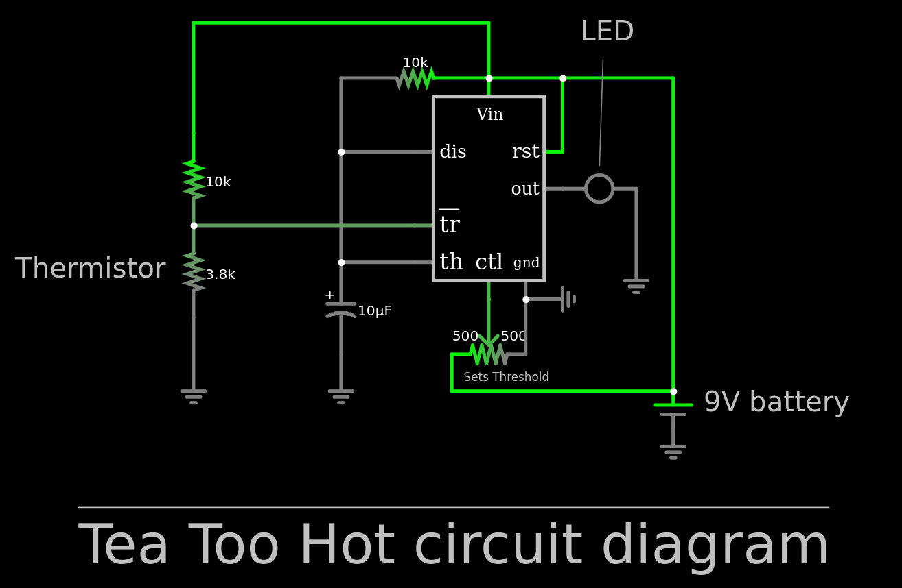

This website is intended to show off some of the projects that I have done. It is a work in progress and will likely chage and be updated over time.
Surface Conductivity Simulations
I simulated the effect finite-sized contacts have for materials with different surface and bulk conductivities.
I discovered that smaller probes appear to have a three order magnitude delay in the effect that the bulk resistance has on the equivilent resistance.
Find my presentation of my results at the APS March Meeting!
Circ du Heart
This is a cute Valentine's Day gift I made for my significant other. It uses a 555 timer in astable mode to make a bunch of LED's blink.
It uses large pull-down resistors to reduce unnecessary power-loss.
Only 3 LED's are capable of being powered in series, so we need 5 branches to light up all 14.
The Analog Tea Tester
I can't stand to drink things that are too hot! This is a problem becuase I really like tea.
Often in my zealous moment of thirst I end up accidentially getting a huge mouthful of burning tea.
I hate buring myself, so to fix the problem I made a little temperature circuit. It will light up when the tea
is below some temperature (set by the potentiometer). It is powered by some vape battery I found on the ground after a
noisy party my neighbors had. The components are comepletely passive and not very resource intensive. I bet this
could be implmented into a silicone tea infuser. Idk maybe I'll look into patenting it later.

Portal Cap
I put an infinity mirror on my graduation cap. What I did was place 8 LED's between a mirror and a one-way mirror.
When light hits the one-way mirror, half gets reflected back and half goes through. The light that gets reflected back
will reflect off the mirror on the bottom, and come back up. This makes some of the light travel a farther distance,
creating the illusion of seemingly no bottom.
I powered the cap with two 3.3v LiPo's I found in some littered vape cartridges.